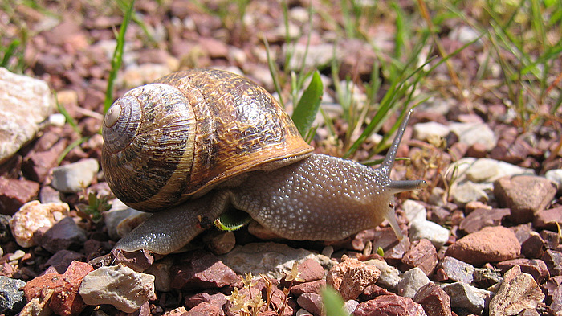

| PHRYGANA | Fauna | Flora |
additions nouveautés |
espèces species |
contact -
info - commentaires phrygana1 (at) gmail.com |
| diversité crétoise -- Cretan diversity | |||||
| Cornu aspersum (O.F. Muller 1774) |
| 28 | Fauna | HELICIDAE | Helicinae | Cornu |
 Cornu aspersum Agia galini 04 avril 2006 |
| Synonyme: Helix aspersa | |
| fr: le Petit-gris | |
| La coquille (25 - 35 (- 40) x 25 - 40 (- 45) mm) est globuleuse, brun pâle à brun jaune, avec 1 - 5 bandes spirales, un aspect ridé. | |
| L 'accouplement est assez long (4 - 10 heures). Après 8 jours , les œufs (entre 40 et 100) sont pondus dans une loge creusée dans le sol. Après 2 à 3 semaines d'incubation, les œufs éclosent. Il faut environ 1 à 2 ans pour atteindre la maturité sexuelle. | |
| Les escargots se nourrissent de matières organiques fraîches au-dessus ou dans le sol: feuilles, écorces, fruits, racines. | |
| Statut en Crète: indigène -- native | |
| Biotopes en Crète: parcs, vergers, vignobles, olivaies, bords des villages, plaines littorales. | |
| Altitudes: 10 - 1200 m | |
| Distribution: Europe, introduit dans les autres continents | |
| Note: Cornu aspersum est comestible et recherché à ce titre. | |
|
Cornu aspersum Melambes (Agios Giorgos) 04 novembre 2006 |
| 03 janvier 2011 |
| © paul fontaine -- © Phrygana.eu 2007 -- 2013 |